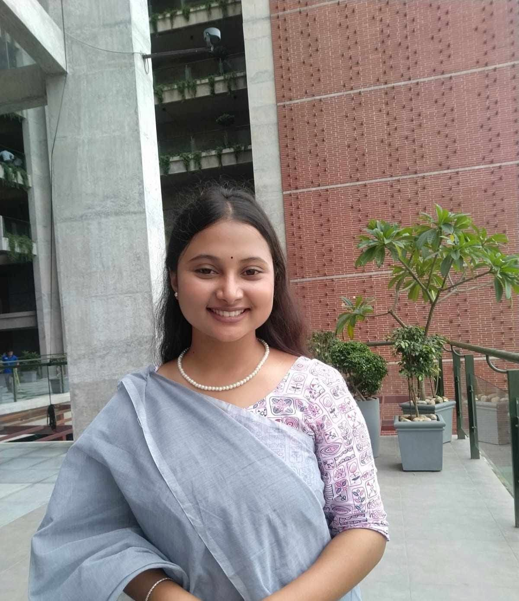

BBA Student at United International University (UIU)
Applying advanced Python pipelines, econometric modeling, and machine learning architectures for corporate diagnostics and risk management overlays.
View Research Dossier
About
Quick overview of who I am and what I work on.
I'm a BBA student at United International University (UIU) focused on financial analytics and quantitative research. I enjoy turning messy financial data into clear, replicable insights using Python and statistical modeling.
My work centers on corporate diagnostics, econometric modeling, and building machine learning overlays to support risk management decisions. I care about research that is transparent and easy for others to reproduce.
Research Dossier
A collection of research projects and analyses. Add a new card for each project.
Built a monthly analytics-ready dataset combining Yahoo Finance stock data, firm-level variables, and World Bank API macro data.
Tools: Python, pandas, yfinance, World Bank API, openpyxl, Jupyter
View Dataset →ARIMA(2,0,3) + GARCH(1,1) model on daily log returns classifying the asset as HIGH RISK.
Tools: Python, arch, statsmodels, pmdarima, Matplotlib, python-docx
View Risk Memo →Compared traditional econometric time-series models with advanced deep learning architectures to forecast NVDA daily returns.
Tools: Python, TensorFlow/Keras, statsmodels
View Analysis →Contact
Feel free to reach out for collaboration, research, or just a conversation.